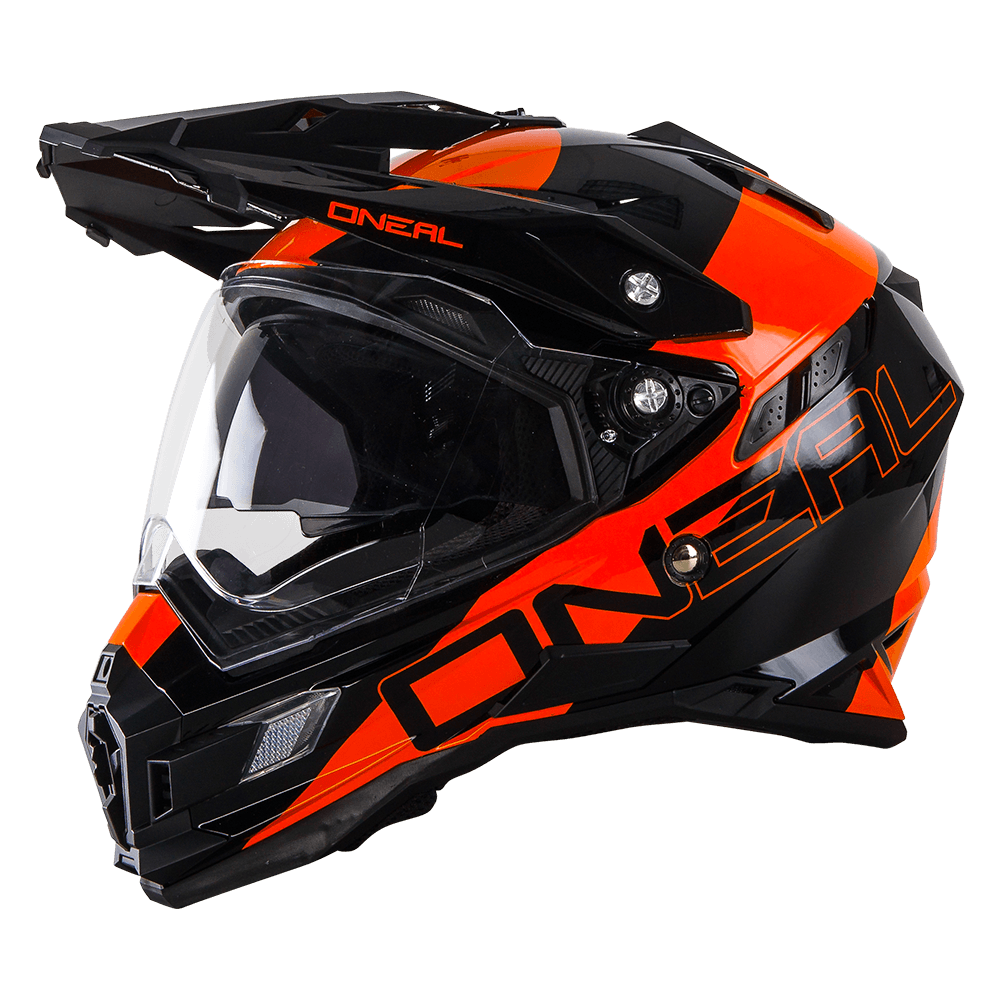

MOTOCYCLES
for the city
Городской мотоцикл — идеальное средство
передвижения по мегаполису,
когда позволяет погода, конечно.
Да и вообще мотоцикл в целом.
Но если вы хотите купить мотоцикл
именно для повседневной езды по
пробкам, то какой-нибудь огромный
круизер или радикальный спортбайк
будут не лучшим выбором.
передвижения по мегаполису,
когда позволяет погода, конечно.
Да и вообще мотоцикл в целом.
Но если вы хотите купить мотоцикл
именно для повседневной езды по
пробкам, то какой-нибудь огромный
круизер или радикальный спортбайк
будут не лучшим выбором.

Топ 5 мотоциклов для города
Мечта о мотоцикле – пожалуй, единственное,
что объединяет большинство пешеходов,
водителей авто и пассажиров общественного
транспорта в плотном потоке машин.
И если вы из тех, кто с приходом весны задумался о приобретение железного коня, и не раз представлял себя, опережающим бесконечный городской трафик – этот обзор поможет определиться с моделью.
Мощный и тяжелый или легкий и маневренный, азиатский или европейский, классический или мотард – для тех, кто наконец хочет определиться, какой мотоцикл купить для езды по городу, выбор только за Вами!
И если вы из тех, кто с приходом весны задумался о приобретение железного коня, и не раз представлял себя, опережающим бесконечный городской трафик – этот обзор поможет определиться с моделью.
Мощный и тяжелый или легкий и маневренный, азиатский или европейский, классический или мотард – для тех, кто наконец хочет определиться, какой мотоцикл купить для езды по городу, выбор только за Вами!
KTM 390 Duke
Австрийский стритбайк. Вес всего 150 кг,
выдает 40 лошадиных сил, отличается прекрасной
управляемостью. Подходит для тех,
кто не планирует испытывать пределы
скоростей. Максимально разгоняется
до 167 км/час.
Honda CBR 600 RR
Спортивный мотоцикл, известный как
семикратный чемпион гонок Supersport.
Несмотря на свое гоночное
предназначение, выбирается многими
для городских поездок. Масса 196 кг,
максимальная скорость 289 км/час и
целых 120 лошадиных сил.
Yamaha XT 660 X
Мотард, оснащенные 17-дюймовыми
колесами с передними дисковыми
тормозами, которые отлично
справляются с городскими и
проселочными дорогами. Масса 186 кг,
макс.скорость 174 км/ч.
Из характерных особенностей Yamaha XT660X
следует выделить стальную раму, простые
подвески в виде обычной телескопической
вилки и моноамортизатора, инжекторную
систему питания двигателя, 5-ступенчатую
КПП, топливный бак на 15 л и 186 кг
снаряженной массы.
Kawasaki NINJA 650
Модель была представлена в 2017 году в
качестве нового поколения серии ER-6.
Технологичный спортбайк с отличной
управляемостью. Подходит для
повседневного передвижения, но
своей динамикой требует периодически
«выпускать пар» на треке. Масса 190 кг,
максимальная скорость 198 км/ч.
серьезными изменениями стали визуальные
доработки - новый внешний вид, новая оптика,
приборная панель и дизайн некоторых элементов пластика.
Suzuki SFV 650 Gladius
Главными отличиями новой модели стали
стальная рама, оптика, приборная панель
и другие элементы внешнего вида.
Незначительно изменилась характеристика
задней подвески (уменьшился на 4 мм ход),
увеличился профиль передней шины,
изменились настройки КПП.
Максимальная скорость 205 км/ч, а масса
202 кг.
Мотоцикл – больше, чем средство
передвижения, но несмотря на это,
к покупке нужно подойти с практичной
стороны. Проанализируйте ежедневный
маршрут и возможные поездки, состояние
дорог и навык вождения.